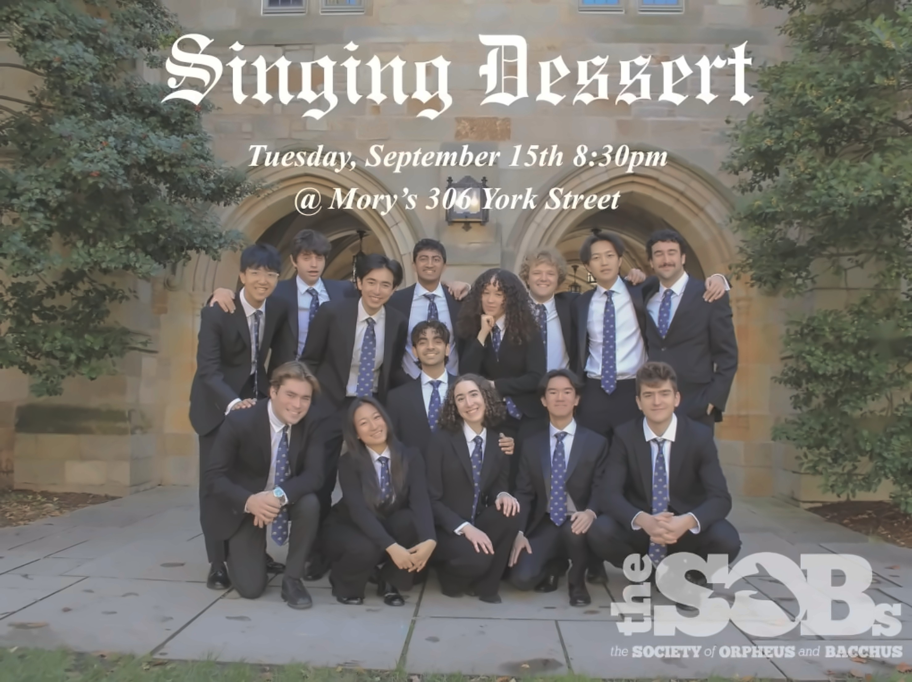
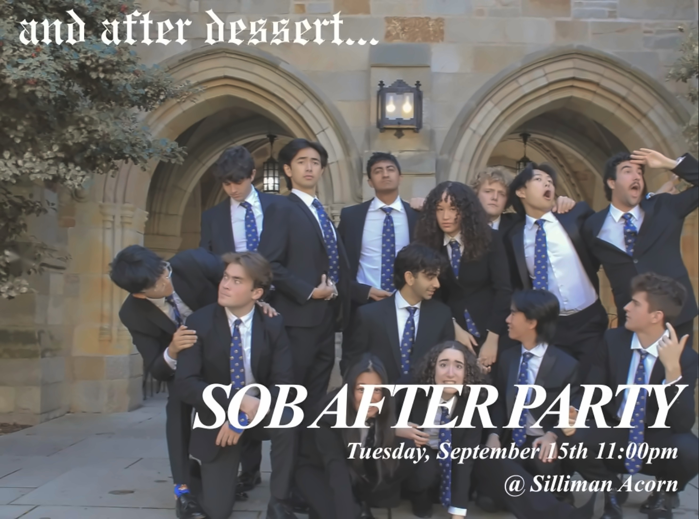
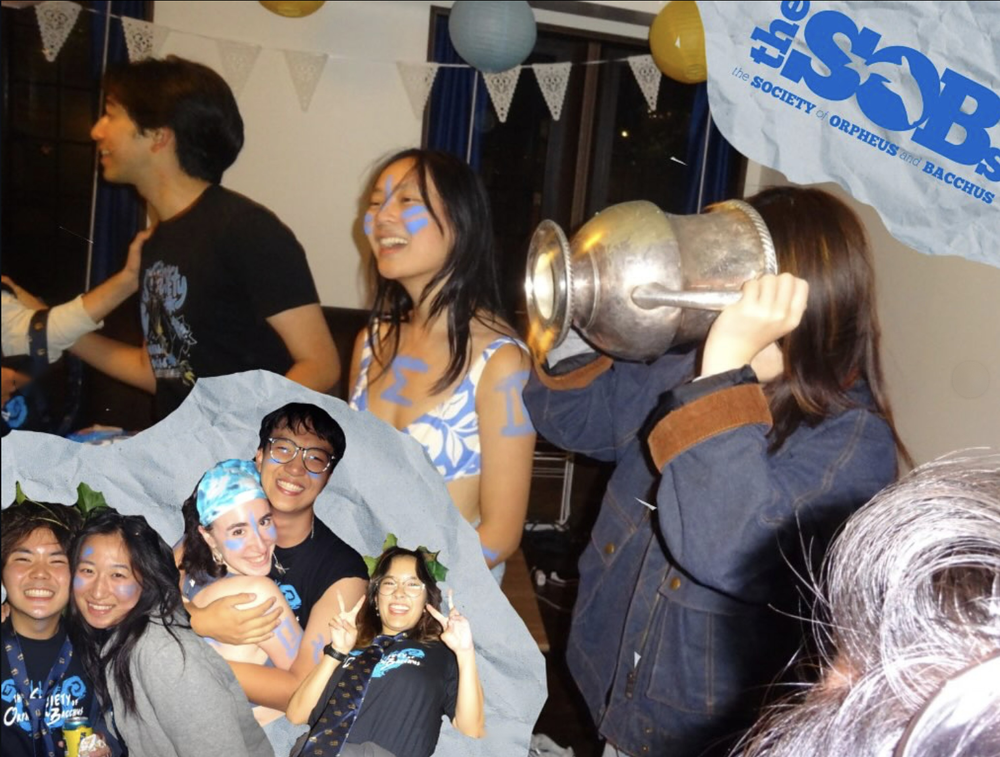
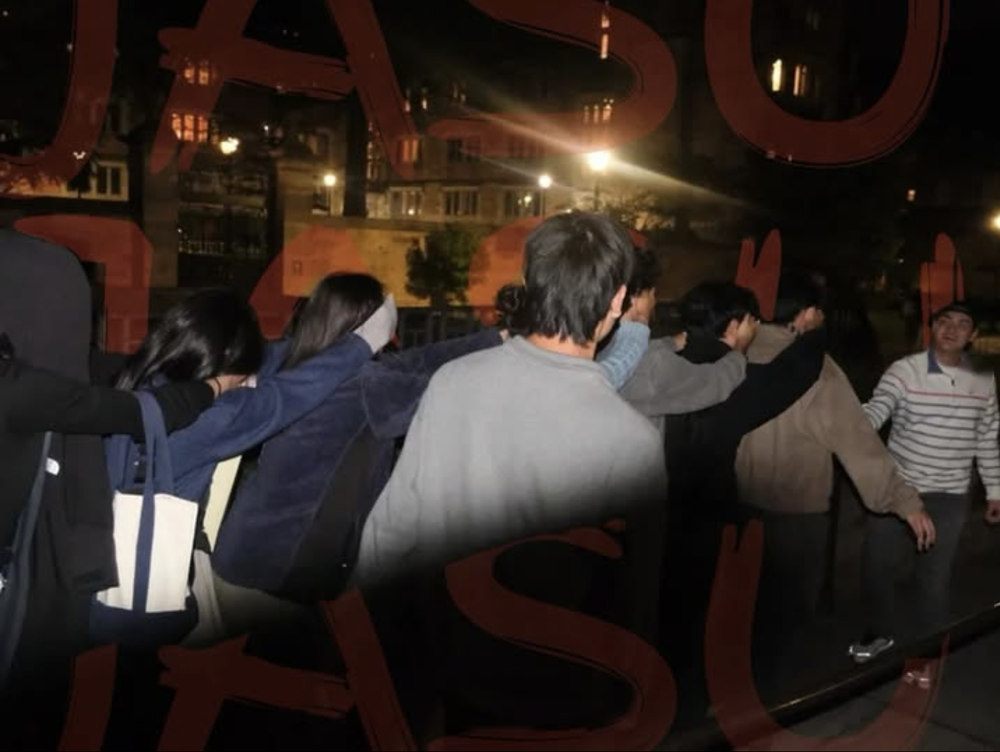
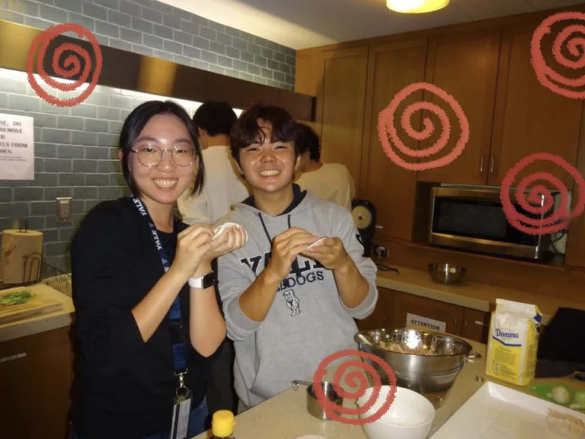

意匠
GRAPHIC DESIGN
PROJECT OVERVIEW
Event posters and social media graphics for the Society of Orpheus and Bacchus and the Japanese American Student Union (JASU)
PROJECT TYPE
Graphic & social media design
YEAR
2026
ROLE
Social media manager





© MAI ISHIMURA · 石村眞愛